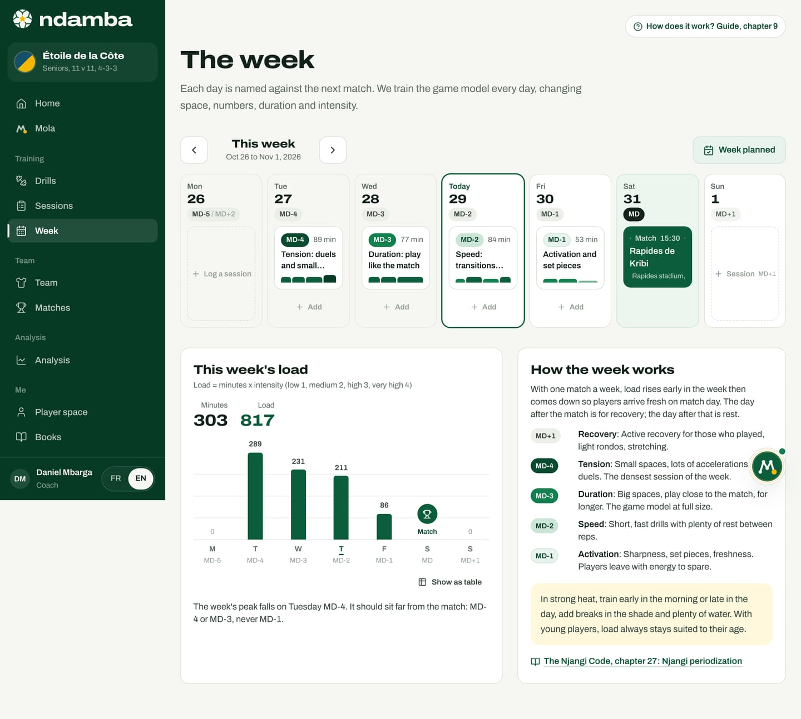
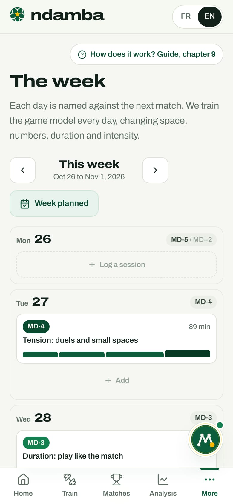

Plan the week
The week around the match, from MD+2 to MD-1, the load shown day by day, the logic of the method, and Prepare the week with Mola in one tap.
10 min read
A Tuesday on a pitch in Douala, and the assistant coach asks: "Today, is it fitness or tactics?" The Njangi answer fits in one sentence: every session is physical, tactical, technical and mental at once, and what changes from one day to the next is how the body pays for that content. Ndamba’s week planner puts that answer on screen. Each day is named against the next match, each session takes the place it belongs in, and the week’s load takes shape in front of you. For a coach working alone, who plans sessions in the evening after a day job, it is the difference between a week that just happens and a week that is built.
Opening the week
- In the left-hand menu, under Training, tap Week. On a phone, tap More, then Week. You can also get there from the sessions list with See the week.
- The page, titled The week, opens on This week, from Monday to Sunday.
- The arrows on either side of the title move to the Previous week or the Next week. Away from the current week, the Today button brings you back.

Each day has a name
Under each date, a chip names the day relative to the match. MD (match day) is the day of the match, shown in black. MD-4 is the fourth day before the match, MD+1 the day after. When the previous match is close, the chip gives both names: in the demo, Monday 26 is both MD-5 (five days before the match on Saturday 31) and MD+2 (two days after the match the Saturday before).
| Day | Its name in Ndamba | What happens |
|---|---|---|
| MD+1 | Recovery | Active recovery for those who played, light rondos, stretching |
| MD+2 | Rest day | Complete rest: an empty day shows Rest advised |
| MD-4 | Tension | Small spaces, lots of accelerations and duels: the densest session |
| MD-3 | Duration | Big spaces, play close to the match, for longer |
| MD-2 | Speed | Short, fast drills with plenty of rest between reps |
| MD-1 | Activation | Sharpness, set pieces, freshness |
| MD | Match day | The most intense session of the week |
Why name days from the match rather than "Monday" or "Tuesday"? First, because the week moves: the match is on Saturday, then Sunday, then a midweek cup tie. With MD codes, the coach, the assistant and the analyst talk about the same week whatever the calendar says. Second, because the order of the days has a physical reason, which The Njangi Code explains in chapter 27: the efforts that tire muscles for longest (braking, duels, changes of direction) go furthest from the match; game endurance comes next; speed, which needs freshness but recovers quickly, sits two days out; activation, with almost no fatigue, comes the day before. The game model is trained every day, but the space, the numbers, the duration and the intensity change.
Filling a day
Each column shows what is planned that day.
- A match appears in dark green: the kick-off time, the opponent, the venue, and a small plane if it is an away game. Once played, it shows Played and the score. Tap it to open the match sheet.
- A session appears as a white card: its MD day, its minutes, its title and a small intensity profile. Tap it to open it in the builder (chapter 8).
- A dotted button lets you add a session. On an empty day it reads Session plus the suggested day type (for example "MD+1"); on a day that already has a session it reads Add; on a past day, Log a session; and two days after a match, when the next one is still far off, Rest advised, because the book asks for a real day off. On match day there is no button.
Tap a day’s button and the New session window opens with the date and the day type already filled in. All that is left is to choose the intention and who builds it, you or Mola.
This week’s load
Under the seven days, the This week’s load card states the calculation in plain words: "Load = minutes x intensity (low 1, medium 2, high 3, very high 4)". For every block of every session, Ndamba multiplies the minutes by the drill’s intensity factor, then adds everything up. On the right, two totals: Minutes and Load.


The chart shows one bar per day, with its value on top. Match day shows a trophy. In the demo, the week climbs to 289 on Tuesday (MD-4), then falls to 231 on Wednesday (MD-3), 211 on Thursday (MD-2) and 86 on Friday (MD-1): 303 minutes and a load of 817 in all. Under the chart, the Show as table link gives the same values as a day-by-day table, for anyone who prefers figures or uses a screen reader.
One sentence draws the lesson: "The week’s peak falls on Tuesday MD-4. It should sit far from the match: MD-4 or MD-3, never MD-1." That is the first check to make. A well-built week has a recognisable shape: high on MD-4 and MD-3, medium on MD-2, low on MD-1. If the MD-1 bar looks like the MD-3 bar, the book is blunt about it: the problem is not the players, it is the session.
This is a planned load, worked out from the drill cards, not a measure of what the players felt. It lets you compare days and weeks before a single cone goes down. Felt load, logged by each player after the effort, lives in the player space (chapter 15) and stays on the player’s device.
How the week works
Next to the load, the How the week works card sums up the rule: with one match a week, load rises early in the week then comes down so players arrive fresh on match day; the day after the match is for recovery; the day after that is rest. The five training days follow, Recovery, Tension, Duration, Speed and Activation, each with its definition.
A yellow box deals with heat, because that is the reality on most pitches across the continent: in strong heat, train early in the morning or late in the day, add breaks in the shade and plenty of water; with young players, load always stays suited to their age. The link The Njangi Code, chapter 27: Njangi periodization opens the chapter of the book that explains all this in detail.
Prepare the week with Mola
Filling four days by hand takes time. Ndamba can do it in one tap, and there are several ways to ask.
| Where | The button or sentence | The sessions’ intention |
|---|---|---|
| The week page, titled The week | Plan the week | No set intention: a balanced week |
| Home, Next match card | Prepare the week | No set intention |
| Home, Njangi Index card | Prepare the week around "Progress" (for example) | The intention that answers the last match’s weak spot (chapter 13) |
| The report of a tagged match | Plan the week with these objectives | The report’s main intention |
| The conversation with Mola | "Plan my week before the match" | The one you name, otherwise the one from the last report if the match was tagged |
All of these do the same job. Ndamba takes the team’s next match, counts four days back, from MD-4 to MD-1, and builds a session for every day still ahead that does not have one. It never touches a session that already exists and never fills days that have gone by. It also leaves free the day of another match and the day after it (MD+1, recovery). Each session is built as described in chapter 8: Tension, Duration, Speed, Activation, with drills suited to the team’s age, and carries the Mola mark in the sessions list.

On the week page, step by step:
- Go to the week of the match. If sessions are missing, a sentence under the navigation says so. In the demo, the following week shows: "Next match: Espoir de Mbalmayo, Wednesday, November 4. 2 sessions are missing from MD-4 to MD-1." Only two, because MD-4 and MD-3 fall on Saturday 31 October, the day of the match against Rapides de Kribi, and on Sunday 1 November, the recovery day.
- Tap Plan the week, the yellow button with Mola’s mark.
- The Your week is ready window lists the sessions created: their MD day, date, title, blocks and minutes. In the demo: "Mola built 2 sessions before the match against Espoir de Mbalmayo", a 52-minute Speed session on Monday 2 (MD-2) and a 40-minute Activation session on Tuesday 3 (MD-1). Tap one to open and fine-tune it, or tap Done.
- The button turns into Week planned. If every remaining day before the match has gone by or is taken by another match, it reads Nothing left to plan before the match. If there is no upcoming match, it is replaced by Add a match.
On the Free plan (and on Player Premium, which does not include the coaching tools), once the five sessions are used, Plan the week and the day buttons are greyed out, and the page offers Discover Coach Pro. The buttons on the home screen and in the report then lead to the plans page, and Mola, in the conversation, explains the limit instead of building.
On the home screen, Prepare the week does the same work without leaving the page: a message announces how many sessions were prepared, with a See the week link. If everything is already in place, the message says so: every day before the match has its session.
In the conversation, Mola shows its work step by step: the next match, the intention of the week (or "No report yet: I’ll keep a balanced week"), "Building MD-4 Tension, MD-3 Duration, MD-2 Speed, MD-1 Activation", then the saving. It ends with "Done", the number of sessions and their dates, and mentions any days it left free. It offers See the week, then the natural next steps: send the call-up, export the week to your calendar. Those two steps, which leave the app, always wait for your approval (chapter 18). Planning the week, on the other hand, only creates sessions on your device: nothing goes out, nothing is sent.
Young players, and the week on a phone
The logic is the same for an academy, with less volume. In the demo of the Lionceaux de Bonamoussadi U13, the same week, built around their own Saturday match against Panthères de Deïdo, adds up to 204 minutes, against 303 for the senior side of Étoile de la Côte, and the session the day before lasts 25 minutes. For an under-13 team or younger, when no match is close, the type suggested for a new session is Youth: play, touch the ball, learn through the game. The book (chapter 28) reminds coaches that young players keep the logic of the week without copying its load, with water, shade and school first.

On a phone, the days stack one below the other, each with its MD chip on the right and its sessions underneath. The load chart and the logic of the week follow further down.


What the week builds
A team that follows this week for a whole season rehearses its model in every condition: tight on Tuesday, stretched on Wednesday, quick on Thursday, sharp on Friday. On match day, the game asks nothing of it that it has not already done. It is the tontine applied to the pitch: every day pays in its share, no contribution is lost, and on match day the team collects the pot.